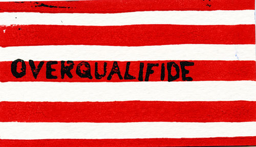
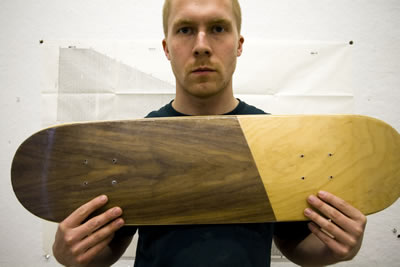

Gallery
The original gallery used an external Tumblr viewer. This gallery preserves the artwork found in the local website backup.



Historical archive · Original language and artwork preserved. Sales, guarantees, and contact details are historical.
The original gallery used an external Tumblr viewer. This gallery preserves the artwork found in the local website backup.

